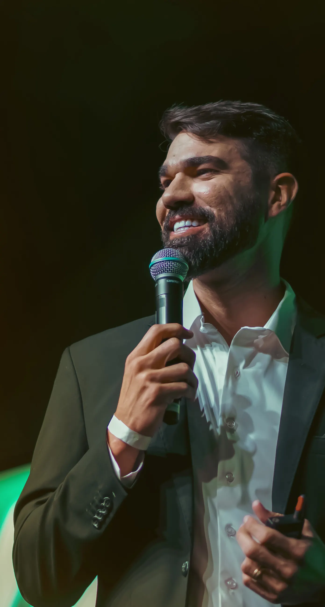
GustavoSampaio
@eusougustavosampaioPalestras para convenções de vendas, encontros de liderança, eventos empresariais, treinamentos de equipes e encontros com clientes e parceiros.
- +3.000palestras
- +400 milpessoas treinadas
- +3.600hde mentoria individual
Entre as empresas atendidas: indústria, agronegócio, varejo, serviços e comunicação. Ver quais
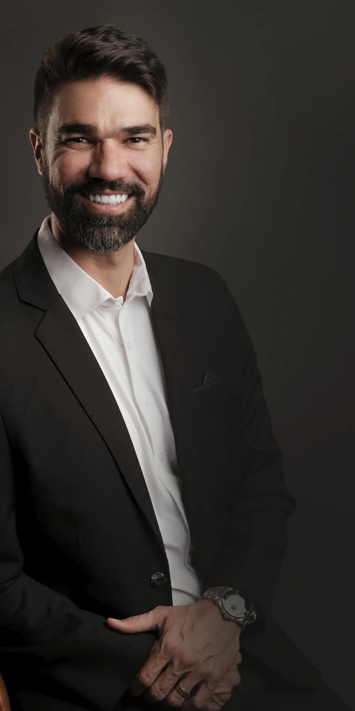
Quem éGustavo Sampaio
Sou empresário, palestrante e estrategista.
Gustavo Sampaio construiu sua base de liderança e alta performance ao longo de seis anos no Banco do Brasil, após ser aprovado em concurso público.
Em 2018, expandiu sua atuação nos negócios ao se tornar sócio de Paulo Vieira na franquia Febracis Goiânia, onde atuou como diretor até 2026.
Atualmente lidera pessoas, projetos e processos voltados ao desenvolvimento pessoal e corporativo.
Essa busca por superação também se reflete em sua paixão por desafios extremos de alta performance e inteligência emocional, como travessias no Deserto do Saara e Atacama, nos Lençóis Maranhenses e a subida ao acampamento base do Everest.
Sua trajetória prática moldou uma convicção central: nenhuma empresa cresce de forma consistente sem desenvolver as pessoas que sustentam seus resultados.
Mais do que transmitir conhecimento, seu propósito é provocar movimento: despertando indivíduos, fortalecendo lideranças e transformando intenção em ação.
Experiência construída na prática!
- + 3.000 palestras
- + 400 mil pessoas treinadas
- + 3.600 horas de mentoria individual
Toda convenção termina com a plateia de pé. A pergunta é o que sobra na segunda-feira.
- O time sabe o que precisa ser feito — e mesmo assim não faz.
- A liderança decide no improviso e passa o ano apagando incêndio.
- A mensagem do evento empolga na hora e some na primeira semana de rotina.
É exatamente nesse ponto que a palestra tem de agir.
Não é apenasuma palestra
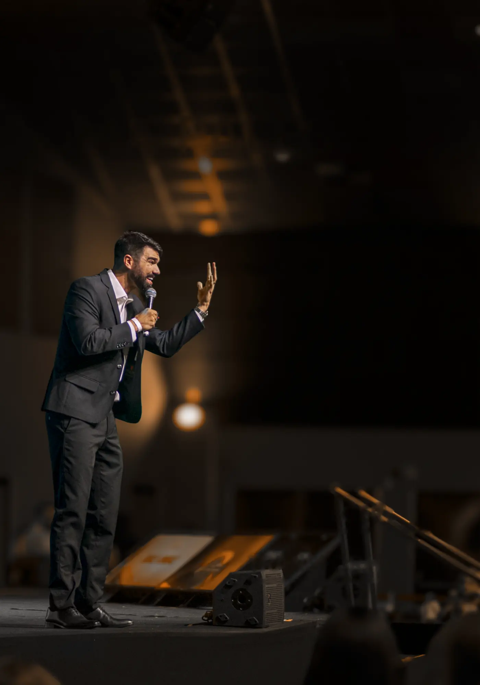
É uma experiência criada para provocar reflexão, gerar movimento e transformar conhecimento em atitude.
Cada palestra é adaptada ao momento da empresa, ao perfil do público e aos objetivos do evento.
Conteúdo, emoção e experiências reais se conectam para que a mensagem não termine quando o evento acaba.
O público é conduzido a:
- Pensarde uma nova maneira.
- Assumirresponsabilidade pelos próprios resultados.
- Decidircom mais clareza.
- Fortalecera comunicação e o trabalho em equipe.
- Transformardesafios em oportunidades de crescimento.
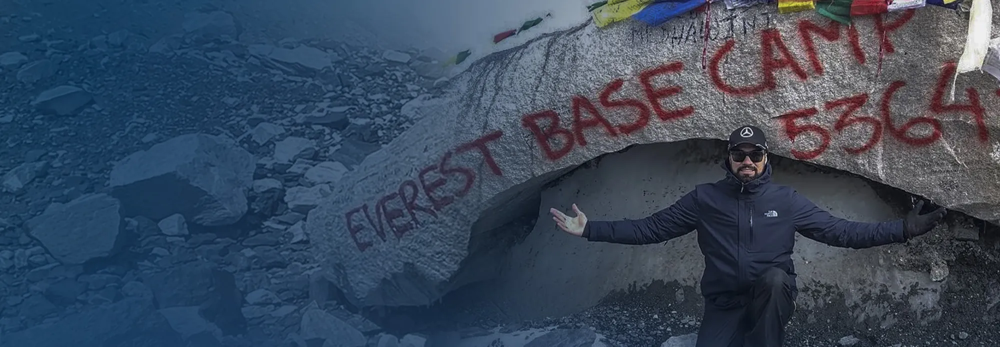
Do Everest aosNegócios
Foram nove dias de caminhada até alcançar o Acampamento Base do Everest, a aproximadamente 5.300 metros de altitude.
Durante essa jornada, enfrentei o frio, o cansaço, a altitude e os meus próprios limites. Entendi que grandes conquistas não dependem apenas de motivação.
Elas exigem direção, preparação, disciplina, inteligência emocional e determinação para continuar avançando.
Hoje, transformo os aprendizados dessa experiência em uma palestra sobre superação, liderança, trabalho em equipe e construção de resultados.
Principais aprendizados:
- Clareza de objetivo
- Preparação para os desafios
- Controle emocional diante da pressão
- Disciplina para continuar
- Força do trabalho em equipe
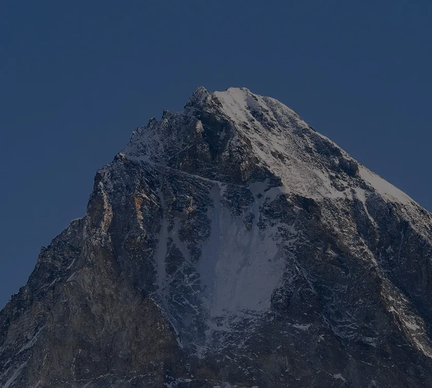
A montanha não ficou menor. Eu precisei me tornar maior do que o desafio.
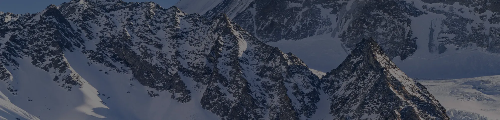
Palestras para
diferentes desafios
Liderança que gera movimento
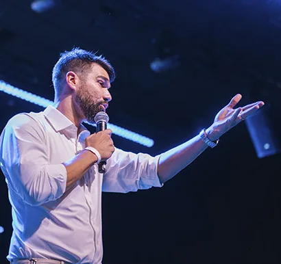
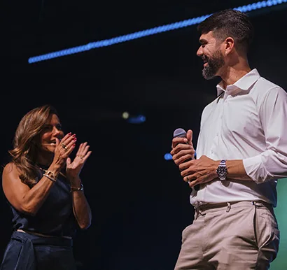
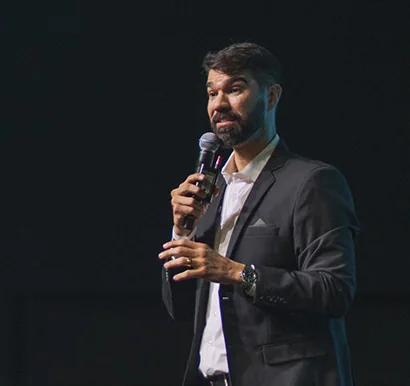
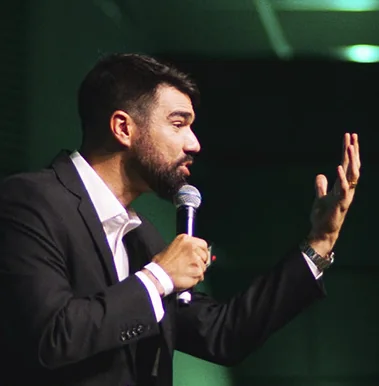
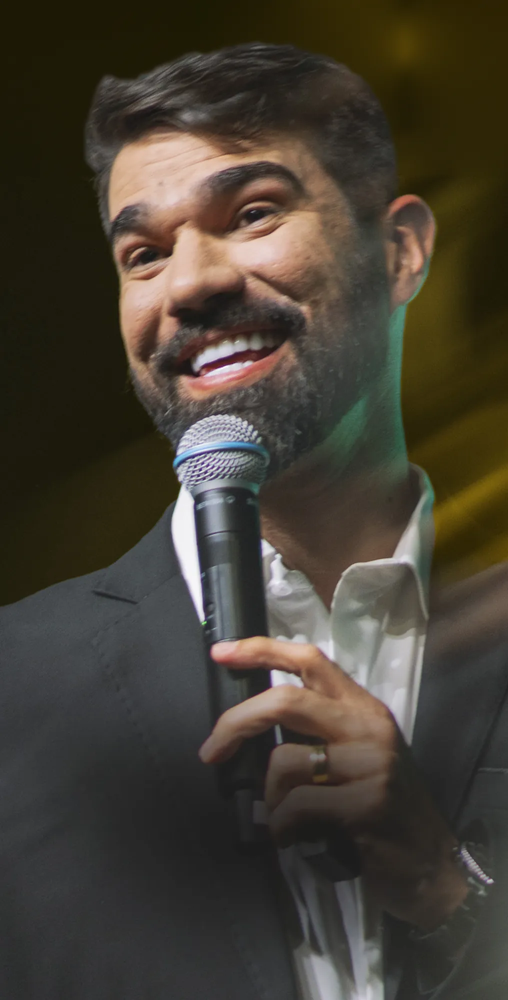
Formatos disponíveis:
- Palestras presenciais e online
- Workshops corporativos
- Treinamentos de 4h, 8h ou 16h
- Programas para empresas
Temas de palestra
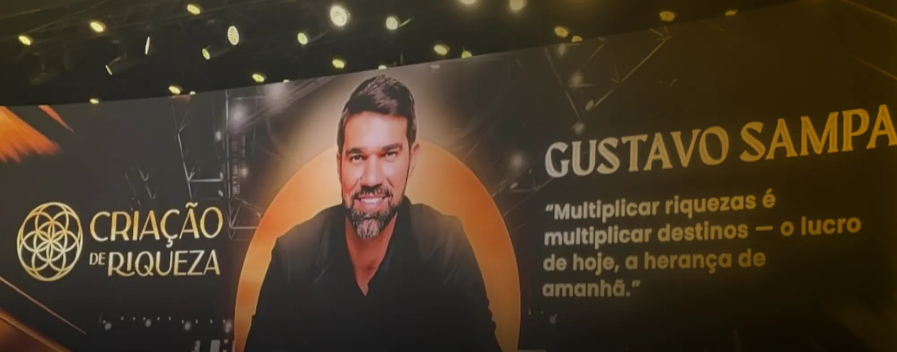
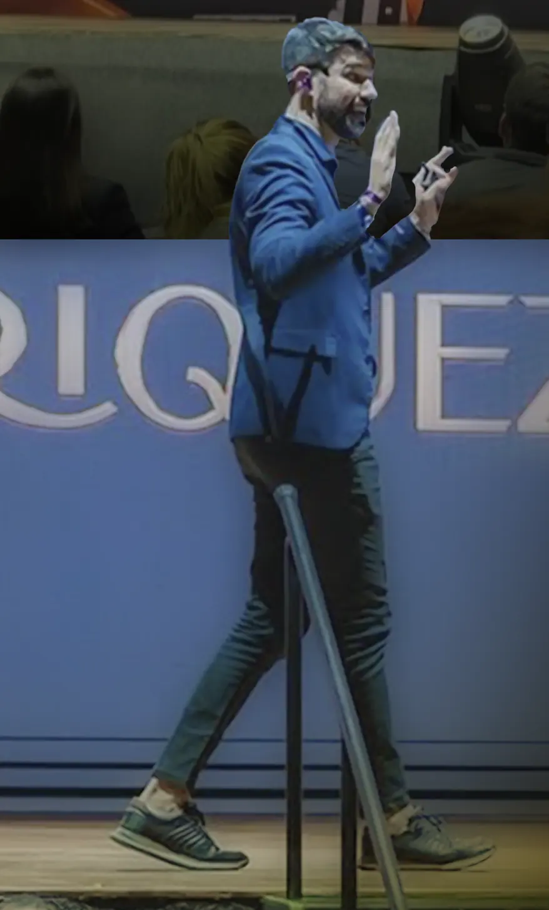
-
Pessoas que movem resultados
Uma experiência sobre comportamento, atitude, responsabilidade e trabalho em equipe.
Quero esta palestra -
Inteligência emocional sob pressão
Como lidar com desafios, conflitos, mudanças e decisões sem perder o equilíbrio e a direção.
Quero esta palestra -
Produtividade com propósito
Como transformar objetivos em prioridades, prioridades em ações e ações em resultados.
Quero esta palestra -
Conexões que geram oportunidades
A importância do networking, da comunicação e da construção de relacionamentos profissionais.
Quero esta palestra -
Mentalidade financeira
Como decisões, comportamentos e inteligência financeira influenciam a vida e os negócios.
Quero esta palestra
Resultadospara a sua organização
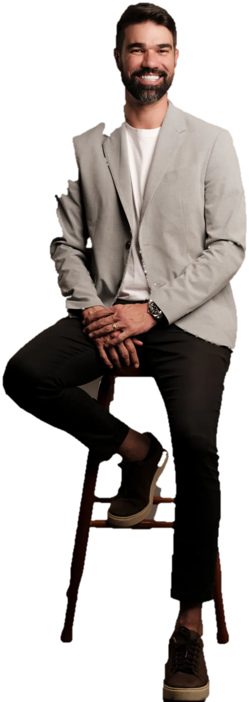
- Lideranças mais preparadas
- Equipes mais engajadas
- Comunicação mais clara
- Mais produtividade e execução
- Inteligência emocional diante dos desafios
- Maior alinhamento com metas e objetivos
- Fortalecimento da cultura de resultados
Solicite uma propostaQuando pessoas e objetivos caminham na mesma direção, os resultados deixam de depender do acaso.
Algumas empresas atendidas
Em todas, o mesmo ponto de partida: tema, recorte e formato ajustados ao público e ao objetivo daquele evento.

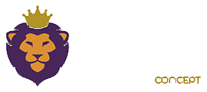
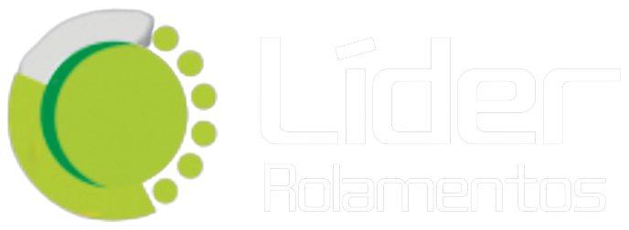
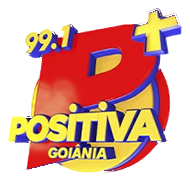
Do primeiro contato ao palco, em três conversas.
-
01
Contato
Você chama no WhatsApp e conta o contexto: público, data, cidade e objetivo do evento.
-
02
Alinhamento
Definimos juntos o tema, o formato — presencial ou online — e a duração que faz sentido para esse público.
-
03
Confirmação
Fechados os detalhes, você recebe as orientações técnicas do que precisa estar pronto no local.
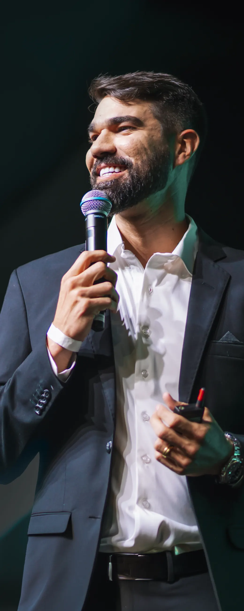
LeveGustavoSampaiopara a sua empresa
Palestras para convenções de vendas, encontros de liderança, eventos empresariais, treinamentos de equipes e encontros com clientes e parceiros.
Cada experiência é personalizada de acordo com o público, o segmento e os objetivos da organização.
Não precisa ter tudo definido: conte o contexto do evento e a proposta é montada a partir dele.